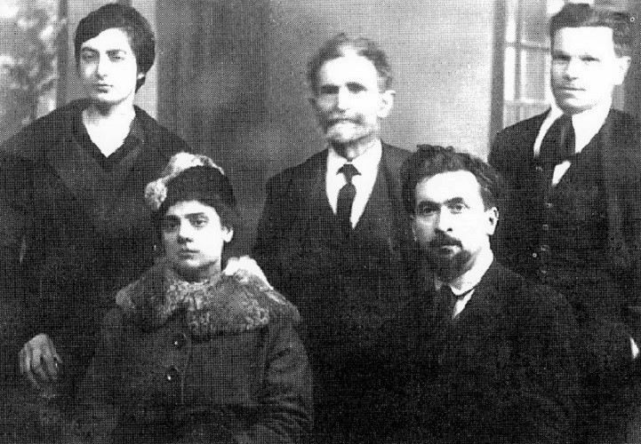

Contexte
Errico Malatesta (1853-1932) est un révolutionnaire italien qui a passé sa vie à expliquer l'anarchisme au plus grand nombre. Il aime la forme du dialogue : en 1884 déjà, sa brochure Entre paysans avait été lue dans toute l'Europe. Au café reprend le procédé. Les premiers dialogues paraissent avant la Première Guerre mondiale dans un journal qu'il dirige, puis sont complétés et réunis au début des années 1920.

L'Italie vit alors les « deux années rouges » (1919-1920) : grèves massives, occupations d'usines, terres prises par les paysans. Malatesta, rentré d'exil, dirige le quotidien anarchiste Umanità Nova. Quelques mois plus tard, le fascisme écrase tout.
Les personnages
- Prosper, rentier, défenseur de l'ordre au nom de la « loi de la nature ».
- Ambroise, juge, qui parle droit, morale et religion.
- César, négociant, partisan de quelques réformes.
- Michel, étudiant, qui pose les questions naïves et justes.
- Georges, l'anarchiste, porte-parole de l'auteur.
Les objections, et les réponses
- « C'est la loi de la nature. » Des terres en friche et des ouvriers sans travail ne sont pas naturels : c'est l'organisation sociale.
- « Il y a les gendarmes. » La force peut se retourner contre celles et ceux qui la tiennent : les gendarmes sont fils du peuple.
- « Le droit et la morale. » Un droit qui consacre l'oppression n'est qu'un outil des privilégiés.
- « C'est la faute du protectionnisme et du manque de capitaux. » Le capital existe, mais il dort tant qu'il ne rapporte pas ; logements et terres restent vides.
- « La propriété vient du travail et de l'épargne. » L'épargne devient exploitation dès qu'elle fait travailler les autres ; à l'origine des grandes fortunes, il y a la violence et la ruse.
- « Partageons, alors. » Non : un partage reconstituerait vite les inégalités. Il faut mettre en commun.
- « Le communisme tuera la liberté et nourrira les paresseux. » L'adhésion est libre, on peut s'en retirer, et un travail rendu agréable et choisi décourage l'oisiveté.
- « Sans gouvernement, c'est le chaos. » Une loi s'impose par la force ; une règle librement acceptée peut être discutée et révisée.
- « L'humain est égoïste. » Il est égoïste et altruiste à la fois ; c'est l'organisation sociale qui fait pencher la balance.
- « La police prévient les crimes. » La criminalité suit surtout les conditions économiques. Supprimer la misère fera plus que mille commissariats.
Débats et limites
- Des personnages un peu caricaturaux : les adversaires de Georges servent surtout à lui passer la balle. Mais Malatesta ne triche pas : le juge finit ébranlé, pas converti.
- Peu de place pour les femmes : le café est un monde d'hommes, comme souvent à l'époque. Les questions de genre, que Goldman ou de Cleyre posaient déjà, n'y apparaissent pas.
Et aujourd'hui ?
Les objections sont exactement celles qu'on entend au repas de famille ou à la machine à café. Le texte est un vrai manuel pour répondre calmement, avec des exemples concrets, sans jargon. On peut même le jouer : plusieurs troupes de théâtre l'ont adapté.
À retenir
- Le meilleur texte pour répondre aux objections qu'on entend tous les jours.
- Changer les conditions matérielles fait évoluer les comportements.
- Convaincre par le dialogue plutôt que par le sermon.
Sources et pour aller plus loin
Le texte original
- « Au café » sur la Bibliothèque anarchiste : le texte intégral, aussi en PDF et en livre numérique (EPUB).
Lire
- Articles politiques, Errico Malatesta, 10/18, 1979.Ses articles d'Umanità Nova et d'ailleurs, sur cinquante ans.
- L'AnarchieNotre fiche sur sa brochure la plus célèbre.
Sur le web
- Errico Malatesta sur WikipédiaSa vie et son action.
- CIRA de LausanneArchives et bibliothèque de l'anarchisme, consultables sur place et en ligne.
Fiche de lecture rédigée par la bande à Mamie d'après les textes de la Bibliothèque anarchiste francophone. Cette fiche est libre de reproduction.
À lire aussi · Révolution & stratégie
- TAZ, Zone autonome temporairePlutôt qu'attendre une révolution qui recrée un pouvoir, ouvrir des espaces de liberté qui surgissent, vivent intensément et se dissolvent avant d'être écrasés.
- L'Action anarchiste dans la révolutionUne révolution doit créer en même temps qu'elle détruit, sinon de nouveaux chefs reprendront les rênes.
- Évolution et révolutionLa première version du texte qui deviendra « L'Évolution, la révolution et l'idéal anarchique ».